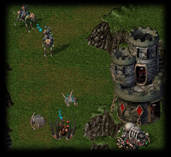
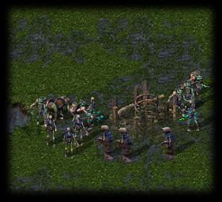
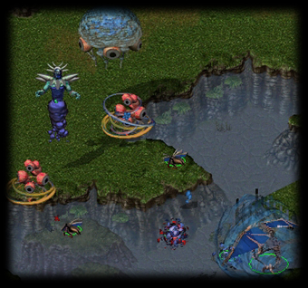

Battles in Strifeshadow
|  | In most RTSes, players spend only a very small fraction of their time involved in a battle. Most RTS battles are resolved quickly, and involve huge amounts of
troops which quickly annihilate each other. Most of a players time is spent
preparing for a battle, and not actually in a battle. Even when there is a battle, in most RTSes, players
don't usually have much opportunity to respond to situations in a battle, or engage in any
sophisticated strategies on the tactical level. Strifeshadow is built with the
philosophy that battles are the most rewarding part of an RTS game.
Battles in Strifeshadow are a frequent occurrence, in which tactical moves, such as feints, pronged attacks and various types of ambushes are all viable. In other words, battles are of higher quantity as well as quality in Strifeshadow. |
In order to accomplish this, we have done two things, one to encourage battle quantity, and one to establish battle quality. To encourage a large number of battles, we have designed the resource system to be primarily a system of networked towers. Because these towers branch off over great distances, there are many points at which a player can be attacked, and as a result, many small attacks rather than one or two large attacks are typically favored. This constrasts with most RTSes which tend to have more localized resource centers, and in turn favor large confrontations.
Another distinction in our resource system is that incremental expansion, namely bringing in a slight additional flow of resources, requires incremental exposure. In most other RTSes, such as Command and Conquer(tm) or Starcraft(tm), incremental expansion, such as building a harvester or peon unit, results in little or no additional exposure. This incremental exposure forms the basis for a lot of small-scale attacks that wouldn't otherwise be present under a more traditional resource system.
|
Strifeshadow has several features which make the battles particularly interesting.
The first is that units take addition damage from the side and rear. This makes
positional advantages much more strong than in other games, and provides part of the
framework for a number of strategies, such as ambushing and pronged attacks.
There is also an engagement feature, which is used by infantry units. This allows infantry units to act as a shield for other units by engaging aggressors in combat. Engagement is an ability with which a unit can "trap" another unit in combat, preventing it from easily breaking off and doing something else. This property in turn results in wiggling about trying to get around infantry screens -- in other words it makes the battle more involved. This differs from other games, in which the player can typically run past any troops in the way, virtually ignoring them. |  |
|  |
The third
part of Strifeshadow's battle-oriented feature set is inherent to our unit design and
counterability. Units and unit mixes have a number of counters, most
of which require a smart tactical play on the part of the player to take advantage of.
For instance, ranged units and infantry together counter just infantry when used blindly,
but if the player with just infantry splits his forces, he might be able to get at the
ranged units without being screened. To counter this the player with ranged and infantry
could in turn split his infantry to try to counter the split. Another example is in the use of Dire Changlings. In order to use Dire Changlings properly, the player must morph them to an immobile form which does grievous damage to infantry units. However, the infantry units must be really close when this happens, otherwise little damage is dealt. A popular strategy to get Dire Changlings to work well is to morph them after friendly infantry units have engaged the opponents infantry units, preventing an easy escape. |
Certain tactical features are demonstrated in animated clips in our Animated Gameplay Shots Gallery.
Starcraft is a registered trademark of Blizzard Entertainment. Command and Conquer is a registered trademark of Westwood Studios.
Strifeshadow, Ethermoon Entertainment and their respective logos are trademarks of Martin Snyder